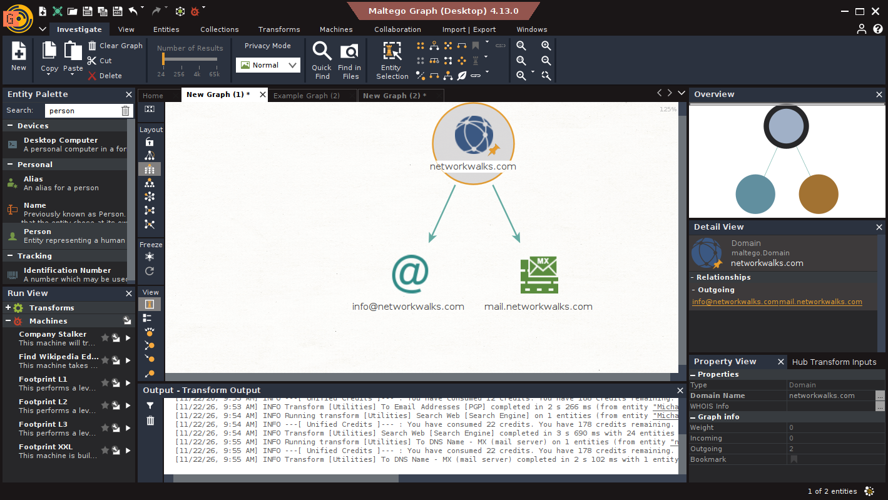
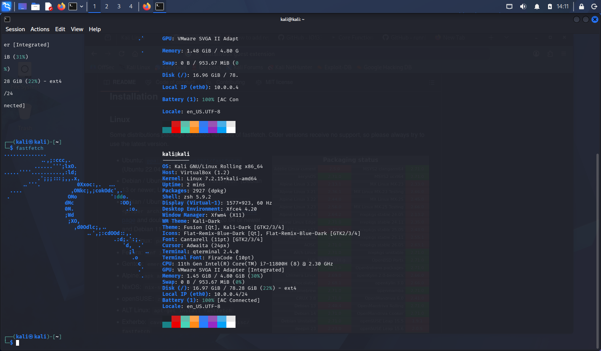

| Pentester Name (Cybersecurity Professional) | Karsten Krawutschke |
| Program/Batch | B084F – Networkwalks |
| Date | 22 November 2026 |
| Modules completed | W2-PM2 (GHDB Footprinting) W2-PM3 (Maltego Footprinting) |
| Client/Target | 1. Publicly indexed internet sources via Google (passive, no target contacted) 2. networkwalks.com (domain assigned by the program task) |
| Permission secured from client? | Target domain networkwalks.com assigned by Networkwalks in the module task; GHDB part uses public search results only |
| Phases covered | Phase 1: Reconnaissance & Footprinting Phase 2-5: not covered by these two modules |
I have performed these activities only as part of the assigned educational cybersecurity lab. The GHDB searches used publicly indexed search results only, and the Maltego work was limited to the domain assigned in the task. All materials are for education and research purposes only. Do not use anything from here to break the law. The instructor, the authors and Networkwalks are not responsible for what you do with this knowledge. Every action you take is your own responsibility. Misuse can lead to criminal charges, heavy fines, loss of your job and a permanent record. In most countries unauthorised access is a crime even when nothing is damaged.
This report covers two footprinting modules of Week 2: Google Hacking Database (GHDB) dorks to find publicly exposed devices and files (W2-PM2), and Maltego to harvest e-mail and mail-infrastructure information about the domain networkwalks.com (W2-PM3). Both modules belong to Phase 1 (Reconnaissance & Footprinting). They show how an attacker collects information from public sources without attacking the target itself.
The lab ran in a Kali Linux virtual machine (VirtualBox, local IP 10.0.0.4/24) and in Maltego Desktop 4.13.0. For each activity this report lists the dork or transform used, the result observed, evidence, and why the finding matters from an attacker's point of view.
| Tool | Purpose |
|---|---|
| Kali Linux (VirtualBox) | Operating system of the lab environment. |
| Google Search | Run GHDB dorks against Google's index. |
| GHDB (exploit-db.com) | Source of ready-made Google dorks (search term "cam" for cameras). |
| Maltego Desktop 4.13.0 | Graph-based OSINT tool; transforms collect e-mail addresses and DNS records of a domain. |
I opened the GHDB on exploit-db.com, searched for the term "cam", copied dorks one by one into Google and opened the results to check whether a camera page was reachable. Every finding was recorded with the exact dork used. The table lists the ten exposed webcam links that I found (Task 1). Credentials: none were entered or needed to be entered by me.
| No. | Link | Relevant Dork | Credentials |
|---|---|---|---|
| 1 | http://184.57.102.6:6500/multi.html | "Active Webcam Page" inurl:8080 | - |
| 2 | http://61.78.164.58:8089/multi.html | "Active Webcam Page" inurl:8080 | - |
| 3 | http://95.255.183.164:8080 | intitle: Android Webcam Server inurl: 8080 | – |
| 4 | http://178.192.60.80:8888 | intitle:"Yawcam" inurl:8081 | – |
| 5 | http://209.160.17.93:5000 | intitle:"Yawcam" inurl:8081 | – |
| 6 | http://mail.nutritechsolutions.com:8002/index.html?size=1&mode=0 | intitle:"NetCamSC*" | – |
| 7 | http://cam1.kuakini.org/index.html?size=0&mode=0 | intitle:"NetCamSC*" | – |
| 8 | https://www.ipcamlive.com/64a530efb34bd | intitle:ip camera login page | – |
| 9 | http://46.14.77.226:8880/view/index.shtml | – | – |
| 10 | http://173.12.123.133:82/view/index.shtml | intitle: AXIS 2. inurl:8080 | – |
The dorks target the default page titles and URL patterns of webcam software (for example Yawcam, NetCamSC, AXIS, Android Webcam Server). These pages are indexed by Google because the owners never restricted them.
Dorks such as intitle:"index of" "parent directory" and filetype:pdf list open directories and downloadable PDF files. The table shows ten listings I found; all were publicly accessible without credentials.
Dorks that I did not note down are shown as "–".
I installed Maltego Desktop (version 4.13.0), completed the configuration and the Maltego ID registration, and started a new graph. I dragged a Domain entity onto the canvas, renamed it to networkwalks.com and ran e-mail and DNS related transforms (for example To Email Addresses [PGP], Search Web [Search Engine] and To DNS Name – MX (mail server)).
Result: the graph shows two entities linked to the domain:

| # | Risk / Finding | Evidence / Observation | Potential Impact | Risk Level |
|---|---|---|---|---|
| 1 | Exposed webcam interfaces | 10 camera pages reachable from the internet via GHDB dorks (Task 1) | Strangers can watch private or business premises; default/no login makes abuse trivial; devices can serve as entry points into a network | ● Critical |
| 2 | Publicly listed file directories | 10 PDF listings found via filetype:pdf / "index of" dorks (Task 2) | Files not meant for the public can be found; open directories can also leak internal documents | ● Medium |
| 3 | Server IPs and ports visible | Camera links contain raw IP addresses and non-standard ports (6500, 8089, 8888 ...) | Gives attackers a target list for port scans and vulnerability checks | ● Medium |
| 4 | Contact e-mail address discoverable | Maltego found info@networkwalks.com | Basis for phishing or social engineering against the organisation | ● Low |
| 5 | Mail infrastructure identifiable | Maltego resolved MX host mail.networkwalks.com | Reveals where mail is handled; helps to profile the infrastructure | ● Low |
Risk level key: ● Critical ● Medium ● Low
These are observations from passive footprinting, not confirmed vulnerabilities. No login, exploitation or vulnerability validation was performed. Further authorised testing would be required to confirm any actual weakness. The risk levels reflect the general exposure of such findings, not a tested impact on a specific owner.
In Week 2 of my Cybersecurity & Ethical Hacking internship I completed two footprinting modules. With GHDB I learned that ordinary Google searches, using the right operators, find exposed camera interfaces and open file listings without ever touching the targets. With Maltego I learned that a single domain entity and a few transforms are enough to map e-mail addresses and mail servers in a visual graph.
Both exercises show that information gathering is the first step of an attack and that a lot of it happens in public sources. The same techniques serve defenders: whoever checks their own exposure first reduces the attack surface. I also learned to document each finding with the exact dork or transform, so that the result can be reproduced.
Finally, footprinting must always stay within an authorised scope. These activities were completed as part of the assigned educational cybersecurity lab.
Source files of the result tables: data/List_webcams.odt (Task 1), data/List_ebooks.odt (Task 2).
Evidence 1 – Maltego graph for networkwalks.com (W2-PM3): see Figure 1 in section 4.2.

-End-